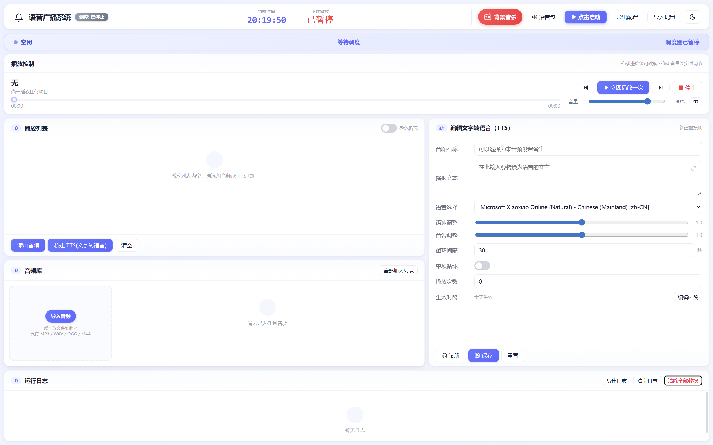

本系统用于超市 / 门店的语音播报与背景音乐管理。支持 TTS 文字转语音、音频导入、按时段自动调度等功能。
点击下图可放大查看：

Q：TTS 没有声音？
A：点右上角「语音包」检测中文语音，推荐使用 Microsoft Edge浏览器。检查是否已经启动调度，播放列表是否「启用」音频，是否在「生效时段」内。
Q：如何打开背景音乐？
A：点右上角红色圆形音乐按钮，可粘贴 URL 或上传本地文件。
本系统的语音合成功能依赖浏览器调用系统语音引擎。在非 Edge 浏览器（如 Chrome、Firefox、Safari、国产浏览器等）中，您可能遇到以下问题：
推荐直接使用 Microsoft Edge 浏览器打开本系统，无需任何额外安装，且内置"晓晓"等高质量中文语音，稳定可靠。
如果坚持使用当前浏览器，请按以下步骤安装系统中文语音（Windows）：
💡 建议操作：点击下方"用 Edge 打开"按钮，系统会自动用 Edge 浏览器重新打开本页面。